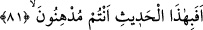
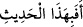
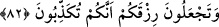

kelimesine kader dendiği gibi, “yaratılmış” anlamındaki mahluk kelimesine de halk
denmiştir.
81. Şimdi siz, bu sözü mü küçümsüyorsunuz?
“Şimdi siz” Ey Mekkeliler! Bu saygı gösterilmeyi ve yüceltilmeyi gerektiren büyük
sıfatları zikredilen “sözü mü küçümsüyorsunuz?” Ki o, Kur’ân’ı Kerim’dir. Allah
Teâlâ Kur’ân’ı hadîs lafziyle ifâde buyurmuştur, zira onda işlerin haberleri vardır.
Keşfü’l-esrâr’da ifâde edildiği üzere
tâbiri zarf olarak müdhinûn lafzına
bağlıdır. Zarf olduğu için mübtedâdan önce gelmesi mümkündür. Zira âmili ona bu
imkânı vermiştir.
Âyet metninde geçen müdhinûn kelimesi iddihân masdarından türetilmiş olup
“yağlanmak” anlamındaki tedhîn gibidir. Ancak müdâra etmek ve yumuşaklık göstermek
mânâsına kullanılmıştır. Bir şeyi küçümsemek sûretiyle ciddiyeti ve mânâyı bırakmak
anlamlarına da gelir. Edhân; hakîkati gizlemek/münafıklık yapmak ve gusletmek gibi
mânâlara taşımaktadır.
İhya adlı eserde şöyle denilmiştir: Müdâhene ile bir sebebe bağlı olarak
görmezlikten gelmek anlamındaki müdâra arasında şu fark vardır: Şayet görmezlikten
gelme ve müsâmaha ile karşılama dînî bir fayda veya bir müslümanın iyiliği için olursa
bu müdâra anlamındadır. Şayet nefsinin hoşuna gittiğinden dolayı ve şehevî arzularını
tatmin için veya kendi değerini artırıp mevkiini sağlamlaştırmak için birinin hatâsına
göz yummuşsan o zaman bu “yağcılık etmek” anlamında müdâhane olur.
Ebudderdâ (r.a.) demiştir ki: Biz bazı kimselerin yüzlerine karşı beşâşet gösterir,
gülümserdik, ama kalblerimiz onlara kızar, lânet ederdi. İşte müdâranın anlamı budur.
Bu, aslında kötülüğünden korkulanın şerrini savmaktır.
82. Allah’ın verdiği rızka karşı şükrü, onu yalanlamakla mı yerine
getiriyorsunuz?
“Allah’ın verdiği rızka karşı” yâni rızkınızın şükrüne karşı. Mânânın doğru olması
için “şükr” kelimesinin muzaf takdir edilmesi gerekir. Rızık kelimesi masdar olup
kendisiyle beslenilen ve rızıklanılan şeyin ismidir. Buradaki rızık ile Kur’an nimeti
kasdedilmiştir. “Şükrü, onu yalanlamakla mı yerine getiriyorsunuz?” Yâni size rızkı
verene karşı yalanlamayı, O’na şükretmenin yerine mi koyuyorsunuz? Ya da rızkınızın